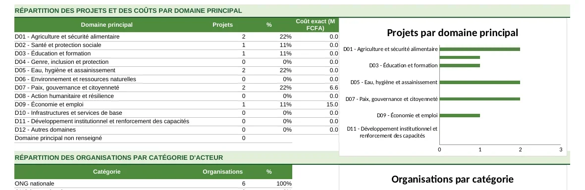

Le formulaire
Un classeur protégé, avec listes déroulantes, contrôles de saisie et bilan de complétude. Cinq feuilles courtes à remplir hors ligne : identité, domaines, projets, lieux d'intervention, partenaires.
Réalisation pour la CR-ONG de Bougouni · 2026
Un dispositif complet pour savoir qui fait quoi, où, quand, pour qui et avec quels partenaires : un formulaire à remplir hors ligne, une consolidation contrôlée, une base régionale et un tableau de bord dynamique.
La Coordination régionale des ONG de Bougouni (CR-ONG) rassemble les organisations qui interviennent dans la région. Pour les représenter auprès des autorités et des partenaires, elle doit connaître précisément ce que chacune fait et où.
Cette cartographie permet d'éviter les doublons d'intervention, de repérer les zones peu couvertes, de faciliter les partenariats et de donner une image fiable de l'action des ONG dans la région.
Les trois fichiers partagent exactement les mêmes champs, codes et listes : une fiche remplie par une ONG se retrouve sans ressaisie dans la base régionale.
Un classeur protégé, avec listes déroulantes, contrôles de saisie et bilan de complétude. Cinq feuilles courtes à remplir hors ligne : identité, domaines, projets, lieux d'intervention, partenaires.
Lit tous les formulaires reçus, contrôle les données, détecte les doublons, attribue les identifiants et prépare les lignes à intégrer, avec une action proposée pour chacune.
Base relationnelle (organisations, projets, interventions, activités, bénéficiaires, partenaires), référentiels, suivi de collecte, journal des imports et tableau de bord dynamique.
Attribués uniquement par l'outil de consolidation, jamais par les répondants, jamais réutilisés.
Une case vide reste vide de bout en bout ; seuls les zéros saisis comptent comme zéro.
Individus, ménages et organisations ne sont jamais additionnés entre eux.
Toute donnée importée est « Déclarée » ; seule la CR-ONG la passe à « Validé CR-ONG ».
Un projet achevé n'est jamais supprimé ; une organisation fermée garde sa fiche.
L'outil propose, la CR-ONG décide : le collage final reste manuel, ce qui lui garde la maîtrise de chaque ajout.
Une collecte en ligne est également préparée (modèle KoboToolbox et questions Microsoft Forms) pour les organisations qui ne peuvent pas utiliser Excel.
Filtres par domaine, cercle, commune, statut, année et bailleur ; indicateurs sur les organisations, les projets, le territoire couvert et le coût des interventions ; répartitions par domaine, par catégorie d'acteur et par bailleur.


Le dispositif a été vérifié avec des formulaires remplis automatiquement pour des organisations fictives, une consolidation réelle, l'intégration dans une copie de la base, le recalcul et la lecture du tableau de bord.
Dix scénarios obligatoires ont été couverts, parmi lesquels : plusieurs domaines ou projets pour une même ONG, un projet sur plusieurs communes, deux ONG aux noms proches, une fiche incomplète, une mise à jour d'ONG déjà enregistrée et l'import de plusieurs fichiers sans doublons.
Les guides sont en PDF ; le formulaire vierge est un classeur Excel.
Le formulaire que remplit chaque organisation, tel qu'il lui est diffusé.
Bases de données, formulaires de collecte, tableaux de bord : parlons de votre besoin.
Me contacter